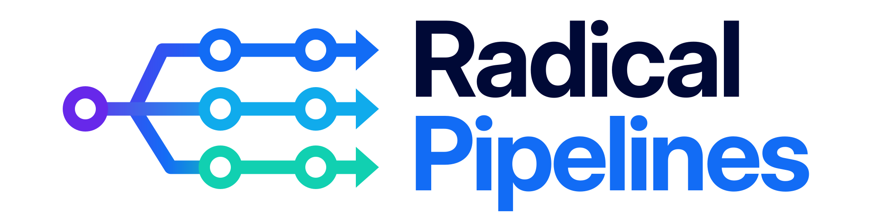

No written spec
So the human keeps filling it in with corrections.

One task, six phases, a different team of agents in each. Every phase writes a file you can read, fix, and re-run from.
Steering an agent in real time works, but it caps how much one person can ship.
So the human keeps filling it in with corrections.
Same prompt, different run, different result. You stay in the loop just in case.
Tests and docs happen only when someone remembers to ask.
Context lives on one laptop. Everyone else sees the PR at the end.
Six phases, an artifact at each, agreed up front. Runs on its own. Stop, fix any phase, re-run from there.
Decisions agreed at the start. Executes to the target phase without checking back in.
Each phase commits its file before the next starts. Your team reads it as it lands.
Bad spec? Fix the spec. Bad plan? Fix the plan. Re-run from that point, not from zero.
Adversarial reviewers, parallel writers, cross-provider runs. Spend compute on the risky surfaces.
No new UI. The orchestrator runs in your CLI (Claude Code or Pi) and writes artifacts into a pipeline folder in the repo. Your team reads them like any other file.
Reconstructed log of a real pipeline run, sped up. Every phase pairs
a writer with an adversarial reviewer; both commit their artifacts
(spec.md, spec-review-1.md, …) so the
team can see what got pushed back on and why.
Run it yourself →
One person runs many pipelines at once. Review when done.
Patch the phase that failed. Every future run benefits.
Built into the pipeline. Stop relying on whoever's driving.
Each phase's artifact lands in the repo. Team can read along.
Given a clear spec, they do the job. The gap is process, not model.
Every hour assisting an agent is an hour not spent on work that needs a person.
Claude Code and Pi already ship skills, teams, hooks, worktrees. We build on top.
/plugin marketplace add Automattic/radical-pipelines
/plugin install radical-pipelines@automatticpi install git:github.com/Automattic/radical-pipelines
Pi also needs predefined teams registered in ~/.pi/teams.yaml and
phase agents available in .pi/agents/ or
~/.pi/agent/agents/.
See README for full setup →
Code, agents, skill, methodology, all in one repo.